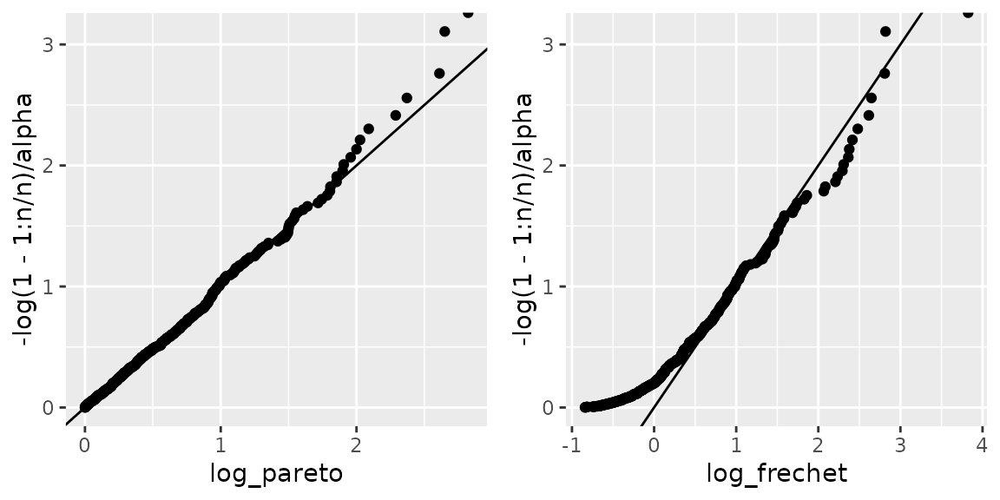
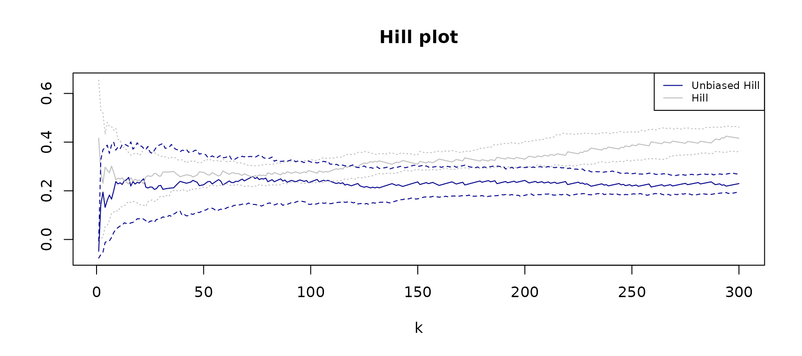

Section 1: Tail-index inference
Gloria Buriticá
Source:vignettes/articles/Example-Analysis.Rmd
Example-Analysis.RmdMain goals of this tutorial
- Review heavy-tailed random variables.
- Compute estimates of the tail index.
The tail-index \(\alpha > 0\) of a heavy-tailed random variable \(X\) is associated with the magnitude of rare events, in this section we review a definition of heavy-tailed variables. The tail-index is a key statistic in risk assessment applications because it measures the magnitude of extremes. Roughly speaking, when \(\alpha\) is small, the extremes are highly significant, and from a practical perspective, this translates to high-impact consequences. For example, in hydrology heavy precipitation amounts lead to devastating losses. To sum up, if \(\alpha\) is small, extremely high records are more likely to happen than if \(\alpha\) is large.
Heavy-tailed random variables
In our setting, we consider a real-valued random variable \(X\) and we say it is heavy-tailed when its
tail distribution has a polynomial decay. To fomalize this definition we
introduce the concept of regular variation.
Definition. (Regular variation) We say that a real valued random variable \(X\) with distribution \(F\) is regularly varying with tail-index \(\alpha > 0\) if \(\lim_{t \to \infty}\bar F(tx)/\bar F(t) = x^{-\alpha},\) where \(\bar F(t) := 1- F(t)\) is the tail distribution.
In the following we call heavy-tailed variables those with regularly varying distributions.
Examples of heavy-tailed variables are the Pareto random variables, the Fréchet, the \(t-\)student, the Burr or the log Gamma distribution.
Examples of light-tailed distributions include then the exponential, the Weibull and the gaussian distribution. For these light-tailed examples, its tail distributions decay at an exponential rate and not at a polynomial rate as for regularly varying distribution. In practice this means that is very rare to record high levels sampling from them, and instead the values concentrate around the mean.
Moments of regularly varying distributions
In the case of regularly varying random variables, the variance and the mean can sometimes equal infinity. This means that sampling from this variable, we obtain highly scattered observations reaching higher records in comparison with light-tailed distributions. To see this consider the following samples, and its respective boxplot.
library(VGAM)
library(ggplot2)
set.seed(123)
n <- 500
alpha <- 2
sample_exponential <- 1 + rexp(n)
sample_pareto <- VGAM::rpareto(n, shape=alpha)
As we already mentioned, the tail index of a heavy-tailed random variable plays an important role in determining the heaviness of tails.
Moments’ property: If \(X\) is non-negative and regularly varying with index \(\alpha > 0\), then for \(p > \alpha\), \(E[X^p] = + \infty\), and for \(p < \alpha\), \(E[X^p] < + \infty\).
In particular the moments’ property entails that for \(\alpha \in (0,2)\), the variance of the variable \(X\) is infinite and for \(\alpha \in (0,1)\) its mean is infinite. In other words, small values of \(\alpha\) indicate heavier tails than larger values of \(\alpha\). For these reasons, estimating the tail-index of a random variable \(X\) is important to quantify the magnitude of rare events. For a full overview on regularly varying distributions we refer to (Bingham, Goldie, and Teugels 1987).
Inference of the tail-index
In this subsection we now turn to the problem of esimating the tail-index from data. We consider a sample of observations \(X_1, \dots, X_n\) with the same distribution of \(X\), and not necessarily independent.
Motivation
To motivate the Hill estimator, note that when \(P\) follows the Pareto distribution with tail index \(\alpha\), then \(\mathbb{P}(Y > x) = 1 -x^{-\alpha}\), and then straightforward calculations imply \[E[\log(P)] = \frac{1}{\alpha}.\] In all generality, when \(X\) is regularly varying, then for all \(x > 1\), \[ \lim_{t \to \infty}\mathbb{P}(X/t > x \mid X > t) = \lim_{t \to \infty} {\overline F(tx)}/{\overline F(t) } = x^{-\alpha}. \] where the last equality follows by the definition of regularly varying random variables. We can interpret this equation to say that the renormalized sample exceeded amount follows asymptotically a Pareto distribution. In this sense \[\mathbb{E}[ \log(X/t) | X > t] \approx \frac{1}{\alpha}, \qquad t \to \infty. \] Finally, replacing the right-hand side in the previous relation with its empirical counterpart yields \[ \frac{ \sum_{j=1}^n \log(X_j/t)1(X_j > t)}{\sum_{j=1}^n 1(X_j> t)} \approx \frac{1}{\alpha}, \qquad t \to \infty. \]
Here the value of \(t\) is a high threshold of the sample. In our case, we replace \(t\) by an order statistic of the sample. If \(X_{(1)} \geq X_{(2)} \geq \cdots \geq X_{(n)}\) are the sorted sample values, then we see that letting \(t = X_{(k^\prime+1)}\) is the previous expression we obtain the Hill estimator
Hill estimator. The Hill estimator is a general procedure to estimate the tail-index of \(X\), and it is given by \[ \frac{1}{\widehat{\alpha}^n} \; := \; \frac{1}{\widehat{\alpha}^n(k^\prime)} := \frac{1}{k^\prime} \, \sum_{t=1}^{n} \log(X_t/X_{(k^\prime+1)})1(X_t > X_{(k^\prime +1)}), \] where \(X_{(1)} \geq X_{(2)} \geq \dots \geq X_{(n)}\) are the sorted sample records, and \(k^\prime\) is a tuning parameter for the Hill estimator.
We see from the previous expression that the assumption of regular variation means that the top records from the sample: \(X_{(1)} \geq \cdots \geq X_{(k^\prime)}\), resemble a sample from a Pareto distribution with tail-index \(\alpha > 0\).
Finally, the Hill estimator yields consistent estimates of the tail-index of \(X\) even when the temporal dependence is not very strong, think for example in a stationary AR(1) series: \(X_t = \rho X_{t-1} + Z_{t}\), for \(|\rho| < 1\), and \((\mathbb{Z})\) a series of iid regularly varying innovations. We refer to Chapter 4 in (Beirlant et al. 2004) for a detailed treatment of tail-index inference.
Bias-Variance trade-off
The Hill estimator requires the tuning parameter \(k^\prime\) in its implementation, and this choice highlights the classical bias-variance trade-off in extreme value statistics. Larger values of \(k^\prime\) mean that when we average a larger number of sample records to compute the Hill estimate, which typically translates in a variance reduction for this statistical procedure. Nevertheless, to obtain unbiased estimates of the tail-index it is important that our top records: \(X_{(1)} \geq \cdots \geq X_{(k^\prime)}\) nicely resemble a sample from a Pareto distribution with tail-index \(\alpha\). However, in all generality this is only granted in many cases if \(k^\prime = k_n^\prime\) is rather small compared to \(n\), which means we can only focus on the top records.
qq-plot : To illustrate the bias-variance trade-off, let’s take again \(P\) to be a Pareto distribution. Moreover notice that for all \(p \in (0,1)\), the quantiles of \(\log P\) can be computed noticing \(\mathbb{P}(\log(P) > - \log(p)/\alpha ) = \mathbb{P}(P > p^{-1/\alpha} ) = p.\) This equation demonstrates that the qq-plot of sample from \(\log(P)\) is given by the points \[ (\log(P_{(k)}),-\log(1-k/n)/\alpha),\] where again recall the notation \(P_{(1)} \geq \cdots P_{(n)}\). Instead, for a general regularly varying variables \(X\), when we plot \((\log(X_{(k)}),-\log(1-k/n)/\alpha))\), then only the highest records of the sample should align with the quantiles of \(\log P\).
library(ggpubr)
sample_frechet <- rfrechet(n, shape = alpha)
sample_pareto <- VGAM::rpareto(n, shape=alpha)
df <- data.frame('log_frechet' = log(sort(sample_frechet)),
'log_pareto' = log(sort(sample_pareto)))
g1 <- ggplot(df) + geom_point(aes( y = -log(1-1:n/n)/alpha, x = log_pareto )) + geom_abline(slope=1)
g2 <- ggplot(df) + geom_point(aes( y = -log(1-1:n/n)/alpha, x = log_frechet )) + geom_abline(slope=1)
ggarrange(g1,g2)
Finally, as expected we can see from the plot above that when \(X\) follows the Fréchet distributions, then only the \(k^\prime\)-largest sample records can be accurately modeled using a Pareto distribution. From this plot we take that in this case we need to choose \(k^\prime = k_n^\prime\) from the Hill estimator rather small compared to \(n\) to satisfactorily describe the tail properties of the variable \(X\).
tsExtremes package implementation
Hill estimator
We are now ready to use the tsExtremes package to compute Hill estimates of the tail-index. We start by loading the \(\texttt{tsExtremes}\) package.
h <- hillestimator(sample_pareto, plot=T , k1=1:500 )
abline(h=1/alpha)
h <- hillestimator(sample_frechet, plot=T , k1=1:500 )
abline(h=1/alpha)We see that for the Fréchet sample it is important to choose the tuning parameter relatively small to obtain nice estimates of the tail-index.
Unbiased Hill estimator
As we mentioned, the choice of \(k^\prime\) is key to obtain unbiased estimates of the tail-index. To choose \(k^\prime\) one idea is to the previous plot, so-called the Hill plot, and pick a value from a range where the estimated values are steady as a function of \(k^\prime\). However, often in practice it is not clear how to find this steady region when the estimator is very unstable as a function of \(k^\prime\). (Haan, Mercadier, and Zhou 2016) propose a bias-correction methodology of the Hill-estimator which allows to obtain Hill-based estimates that are more robust to the choice of the tuning parameter. We compare both estimator in the following case study of precipitation amounts. The \(\texttt{tsExtremes}\) package includes the rainfall dataset, containing daily rainfall records from nine different weather stations in France. The data and season of each record is available. To compute the tail-index and produce a Hill Plot of summer rainfall in Brest we use the function below.
h <- alphaestimator(rainfall$BREST[rainfall$SEASON=="SPRING"], plot=T , R0 = 100, hill=T , k1 = 300 )
We see fro the plot that with the Hill estimator it is not very clear how to choose the tuning parameter. Instead, the unbiased-Hill procedure is stable over a wider range of values which facilitates chooing \(k^\prime\).